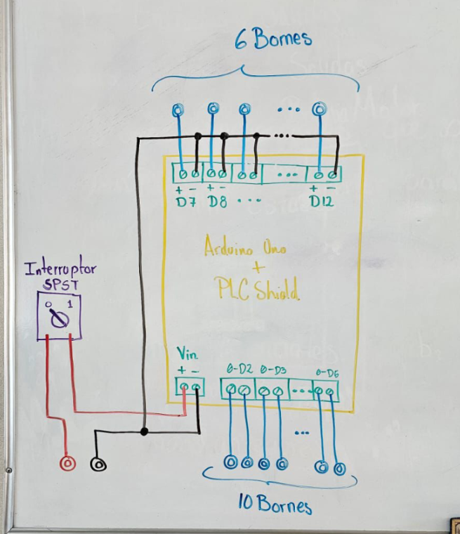

¡Bienvenidos!
Bienvenido a nuestra página dedicada a la automatización industrial. Aquí exploraremos el uso del PLC Control Shield con Arduino, una herramienta versátil que combina el poder de los microcontroladores con las necesidades de la automatización moderna.
- La automatización industrial ha cambiado radicalmente la manera en que interactuamos con los procesos productivos. Desde los primeros sistemas mecánicos hasta las soluciones tecnológicas modernas, esta disciplina busca mejorar la eficiencia, reducir costos y aumentar la precisión. En esta página exploraremos conceptos clave y ejemplos de cómo la tecnología está revolucionando nuestras industrias, abriendo puertas a un futuro más conectado y eficiente.
Objetivo
Explicar el desarrollo de módulos educativos que faciliten el aprendizaje de sistemas automatizados, utilizando herramientas accesibles como el PLC Control Shield Arduino. A través de estos módulos, los estudiantes podrán comprender los conceptos básicos de automatización, realizar prácticas reales y fortalecer sus habilidades técnicas en la programación y operación de sistemas automatizados. Conoce más sobre este tema , te invitamos a explorar las otras secciónes de nuestra página que se encuentra en la parte superior.
Conoce más sobre ete tema , te invitamos a explorar las otras secciónes de nuestra página que se encuentra en la parte superior.